Candidate List 20260616 Previous Day Next Day Section 1: New Sources (age<1d) Cosmological Afterglow
Section 2: Old (1-5d) sources observed last night placeholder
Section 1: New Afterglow/FBOT Cands Last Night (4)
1. ZTF26abcecid (Afterglow?) [Back to Top] [Share] [Trigger Swift] [Fritz ] [Lasair ]RA, Dec: 213.45343, -9.03144 14h13m48.82s, -9d-1m-53.20sGalactic (l, b): 334.68662, 48.69508 WARNING: 4.16 deg from ecliptic plane ext(g-r) = 0.042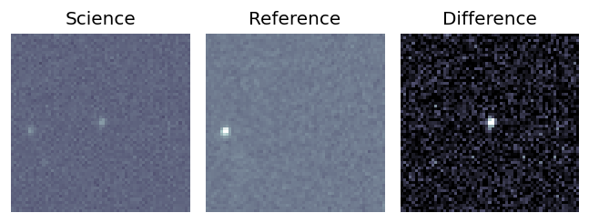
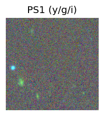
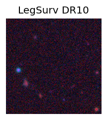
LegacySurvey: 1 sources in 3 arcsec Closest: d = 2.73 arcsec, 223.5 deg (east of north) photoz=0.97 (68% bounds 0.56, 1.26), type=PSF peak abs mag = -25.41 (68% bounds -23.97, -26.12) 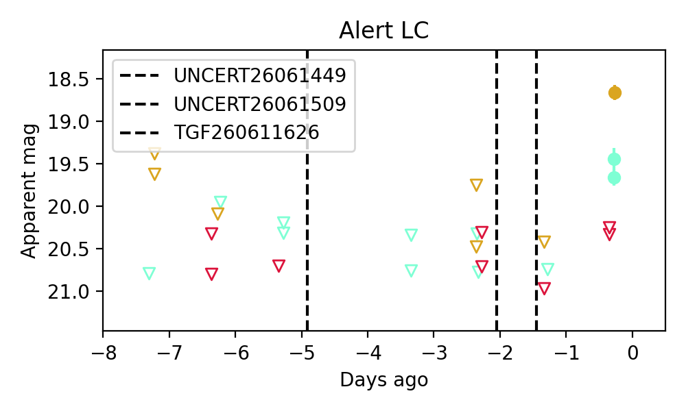
Consistent with synchrotron, g-r>0!
2. ZTF26abcecsp (Afterglow?) [Back to Top] [Share] [Trigger Swift] [Fritz ] [Lasair ]RA, Dec: 213.49294, -6.36014 14h13m58.31s, -6d-21m-36.51sGalactic (l, b): 336.75487, 51.01036 ext(g-r) = 0.041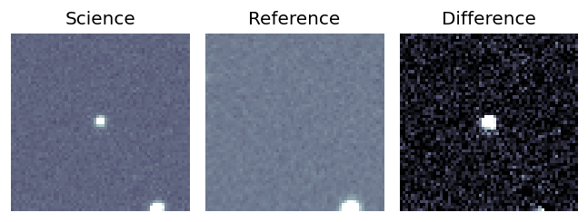
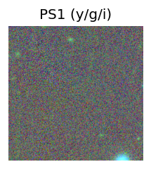
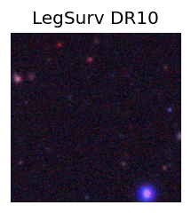
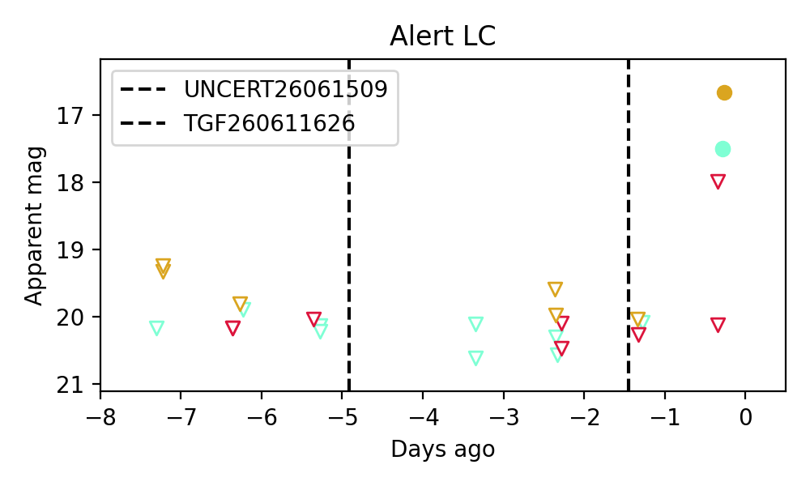
Consistent with synchrotron, g-r>0!
3. ZTF26abcedoq (Afterglow?) [Back to Top] [Share] [Trigger Swift] [Fritz ] [Lasair ]RA, Dec: 220.59256, -11.23338 14h42m22.21s, -11d-14m-0.17sGalactic (l, b): 341.6556, 43.14371 WARNING: 4.31 deg from ecliptic plane ext(g-r) = 0.079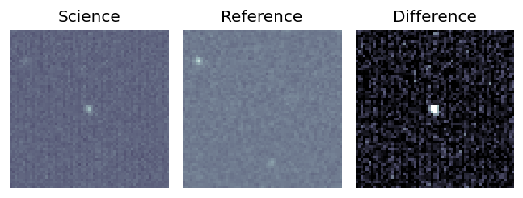
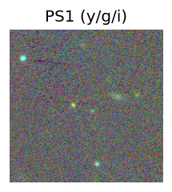
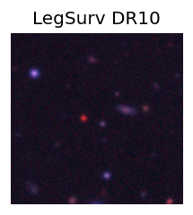
LegacySurvey: 1 sources in 3 arcsec Closest: d = 3.18 arcsec, 225.0 deg (east of north) photoz=0.94 (68% bounds 0.4, 1.69), type=PSF peak abs mag = -25.52 (68% bounds -23.31, -27.11) 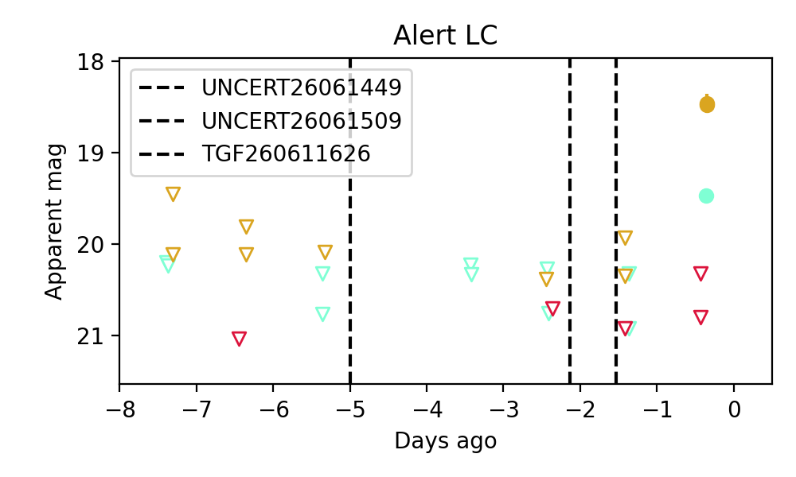
Consistent with synchrotron, g-r>0!
4. ZTF26abchkfr (Afterglow?) [Back to Top] [Share] [Trigger Swift] [Fritz ] [Lasair ]RA, Dec: 333.97308, 6.07453 22h15m53.54s, 6d 4m28.31sGalactic (l, b): 68.54407, -39.83783 ext(g-r) = 0.1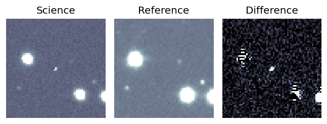
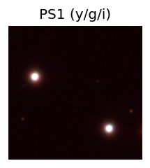
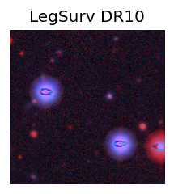
LegacySurvey: 1 sources in 3 arcsec Closest: d = 6.90 arcsec, 189.0 deg (east of north) photoz=1.05 (68% bounds 0.94, 1.19), type=REX peak abs mag = -25.87 (68% bounds -25.57, -26.2) 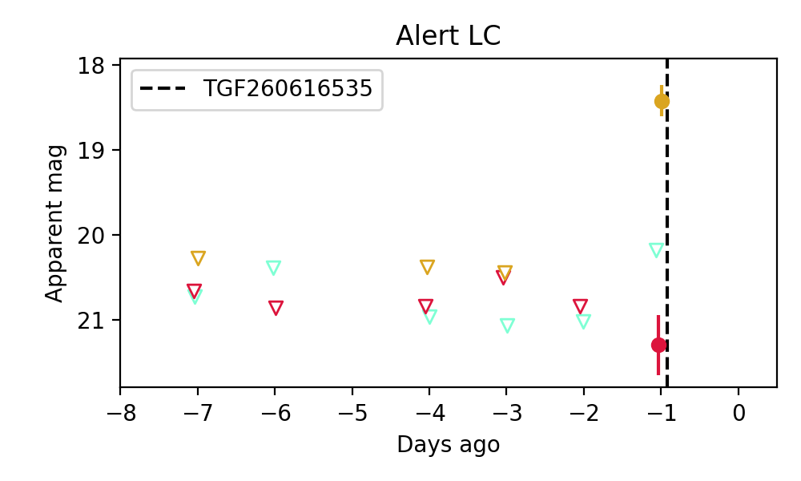
Consistent with synchrotron, g-r>0!
Section 2: Older Sources Observed Last Night (20)
0. ZTF26abarcrv (FBOT?) [Back to Top] [Share] [Trigger Swift] [Fritz ] [Lasair ]RA, Dec: 275.07786, 77.79911 18h20m18.69s, 77d47m56.78sGalactic (l, b): 109.19915, 28.10906 ext(g-r) = 0.068peak abs mag = -19.24 LegacySurvey: 1 sources in 3 arcsec Closest: d = 3.09 arcsec, 290.4 deg (east of north) photoz=0.18 (68% bounds 0.05, 0.43), type=REX peak abs mag = -20.69 (68% bounds -17.65, -22.84)
1. ZTF26abatjrk (Afterglow?) [Back to Top] [Share] [Trigger Swift] [Fritz ] [Lasair ]RA, Dec: 333.11822, -5.69258 22h12m28.37s, -5d-41m-33.30sGalactic (l, b): 55.20912, -46.56889 ext(g-r) = 0.075peak abs mag = -18.04 LegacySurvey: 1 sources in 3 arcsec Closest: d = 0.42 arcsec, 221.9 deg (east of north) photoz=0.02 (68% bounds 0.01, 0.03), type=SER peak abs mag = -15.51 (68% bounds -14.58, -16.33)
2. ZTF26abauikj (Afterglow?FBOT?) [Back to Top] [Share] [Trigger Swift] [Fritz ] [Lasair ]RA, Dec: 151.07413, 10.79127 10h 4m17.79s, 10d47m28.58sGalactic (l, b): 227.27394, 47.49814 WARNING: -0.99 deg from ecliptic plane ext(g-r) = 0.038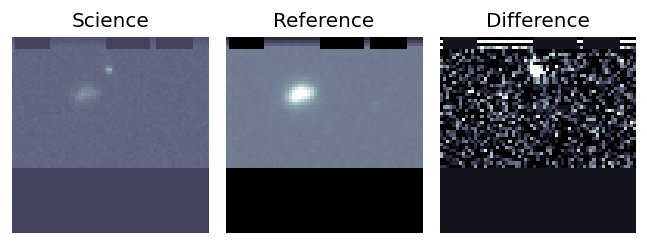
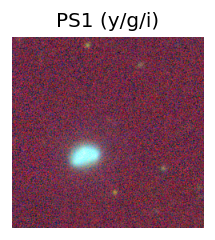
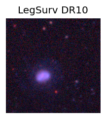
LegacySurvey: 1 sources in 3 arcsec Closest: d = 1.93 arcsec, 171.2 deg (east of north) photoz=0.43 (68% bounds 0.08, 0.71), type=EXP peak abs mag = -24.17 (68% bounds -20.16, -25.47) 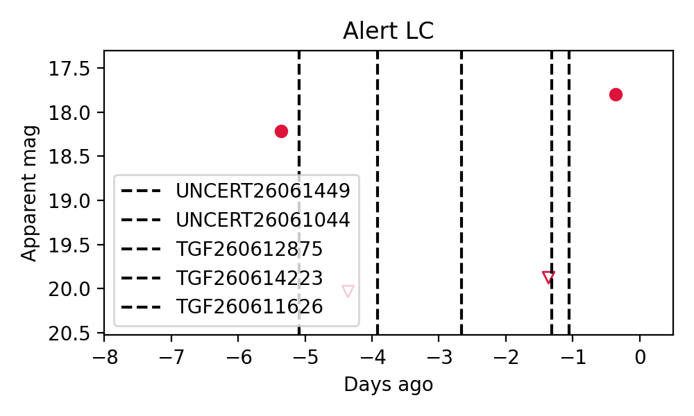
3. ZTF26abbbvgs (FBOT?) [Back to Top] [Share] [Trigger Swift] [Fritz ] [Lasair ]RA, Dec: 204.89798, -0.4319 13h39m35.52s, 0d-25m-54.83sGalactic (l, b): 327.67021, 60.10649 ext(g-r) = 0.035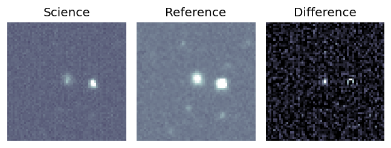
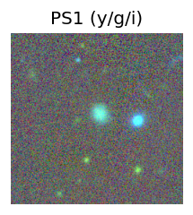
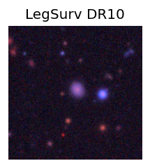
peak abs mag = -19.65 peak abs mag = -19.45 LegacySurvey: 1 sources in 3 arcsec Closest: d = 1.79 arcsec, 326.7 deg (east of north) photoz=0.17 (68% bounds 0.14, 0.19), type=SER peak abs mag = -19.68 (68% bounds -19.35, -19.99) 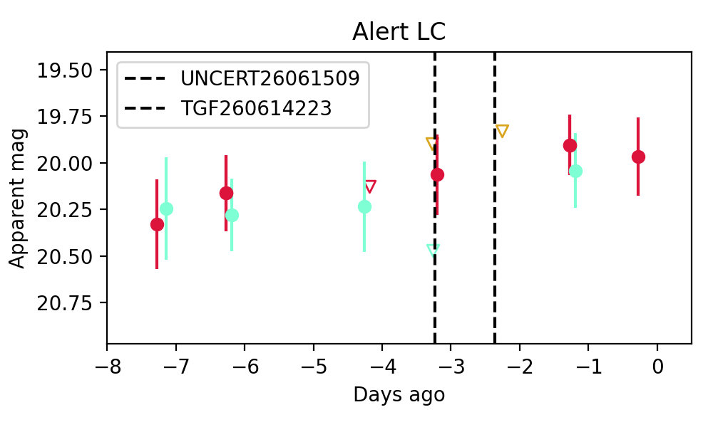
Consistent with synchrotron, g-r>0!
4. ZTF26abbgihv (Afterglow?) [Back to Top] [Share] [Trigger Swift] [Fritz ] [Lasair ]RA, Dec: 292.47011, 5.15903 19h29m52.83s, 5d 9m32.50sGalactic (l, b): 41.95003, -6.14131 ext(g-r) = 0.484PS1: 1 source in 3 arcsec Closest: d = 2.32 arcsec photoz=0.34+/-0.19 peak abs mag = -24.54
5. ZTF26abbjayz (Afterglow?) [Back to Top] [Share] [Trigger Swift] [Fritz ] [Lasair ]RA, Dec: 280.52866, -11.28661 18h42m6.88s, -11d-17m-11.80sGalactic (l, b): 21.82445, -3.08106 ext(g-r) = 0.84
6. ZTF26abbjzrw (FBOT?) [Back to Top] [Share] [Trigger Swift] [Fritz ] [Lasair ]RA, Dec: 311.73672, -9.38138 20h46m56.81s, -9d-22m-52.99sGalactic (l, b): 37.70853, -29.89323 ext(g-r) = 0.075LegacySurvey: 1 sources in 3 arcsec Closest: d = 0.07 arcsec, 214.3 deg (east of north) photoz=1.19 (68% bounds 0.96, 1.57), type=REX peak abs mag = -26.31 (68% bounds -25.74, -27.04)
7. ZTF26abbkufc (FBOT?) [Back to Top] [Share] [Trigger Swift] [Fritz ] [Lasair ]RA, Dec: 212.52168, 0.58456 14h10m5.20s, 0d35m4.42sGalactic (l, b): 341.61012, 57.42674 ext(g-r) = 0.039peak abs mag = -20.01 LegacySurvey: 1 sources in 3 arcsec Closest: d = 0.46 arcsec, 172.6 deg (east of north) photoz=0.12 (68% bounds 0.1, 0.15), type=REX peak abs mag = -19.12 (68% bounds -18.68, -19.7) Consistent with synchrotron, g-r>0!
8. ZTF26abbloxx (Afterglow?) [Back to Top] [Share] [Trigger Swift] [Fritz ] [Lasair ]RA, Dec: 228.94015, 2.94607 15h15m45.64s, 2d56m45.85sGalactic (l, b): 4.21005, 47.88184 ext(g-r) = 0.051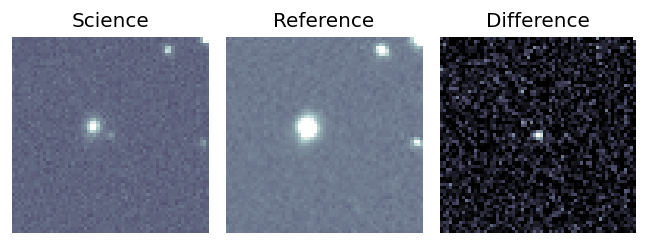
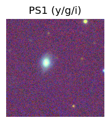
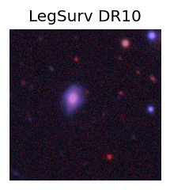
peak abs mag = -19.10 LegacySurvey: 1 sources in 3 arcsec Closest: d = 2.99 arcsec, 56.1 deg (east of north) photoz=1.28 (68% bounds 0.2, 2.44), type=DEV peak abs mag = -25.16 (68% bounds -20.32, -26.88) 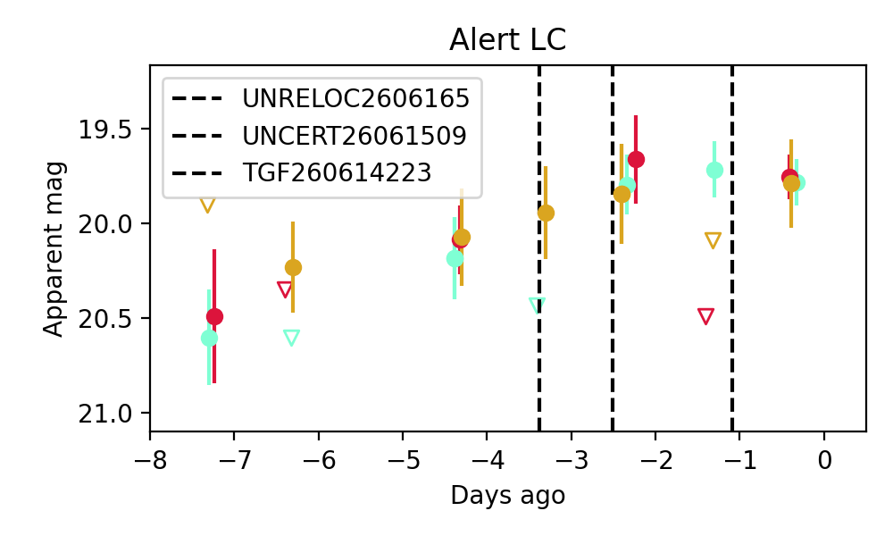
Consistent with synchrotron, g-r>0!
9. ZTF26abbmcve (Afterglow?) [Back to Top] [Share] [Trigger Swift] [Fritz ] [Lasair ]RA, Dec: 276.20661, 10.67227 18h24m49.59s, 10d40m20.19sGalactic (l, b): 39.53003, 10.70597 ext(g-r) = 0.2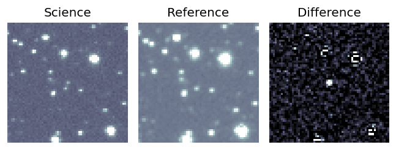
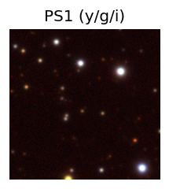
PS1: 1 source in 3 arcsec Closest: d = 3.45 arcsec photoz=0.49+/-0.17 peak abs mag = -23.92 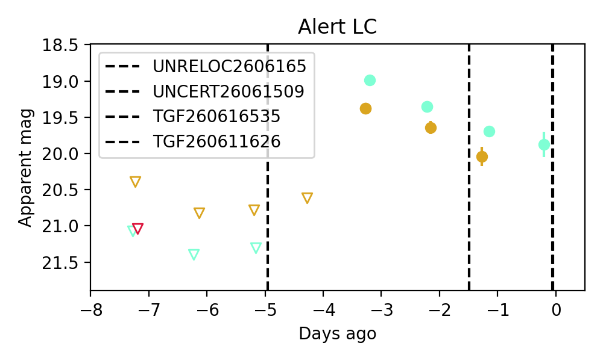
10. ZTF26abbskvy (Afterglow?) [Back to Top] [Share] [Trigger Swift] [Fritz ] [Lasair ]RA, Dec: 248.43056, -20.50726 16h33m43.33s, -20d-30m-26.13sGalactic (l, b): 357.32421, 18.15288 WARNING: 1.44 deg from ecliptic plane ext(g-r) = 0.5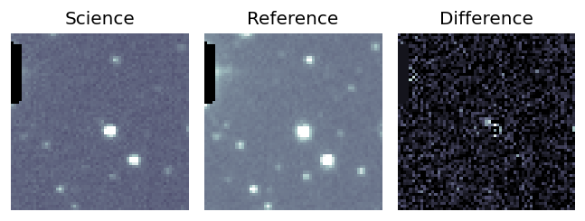
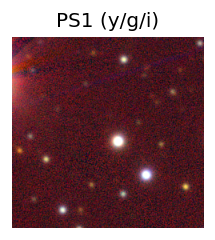
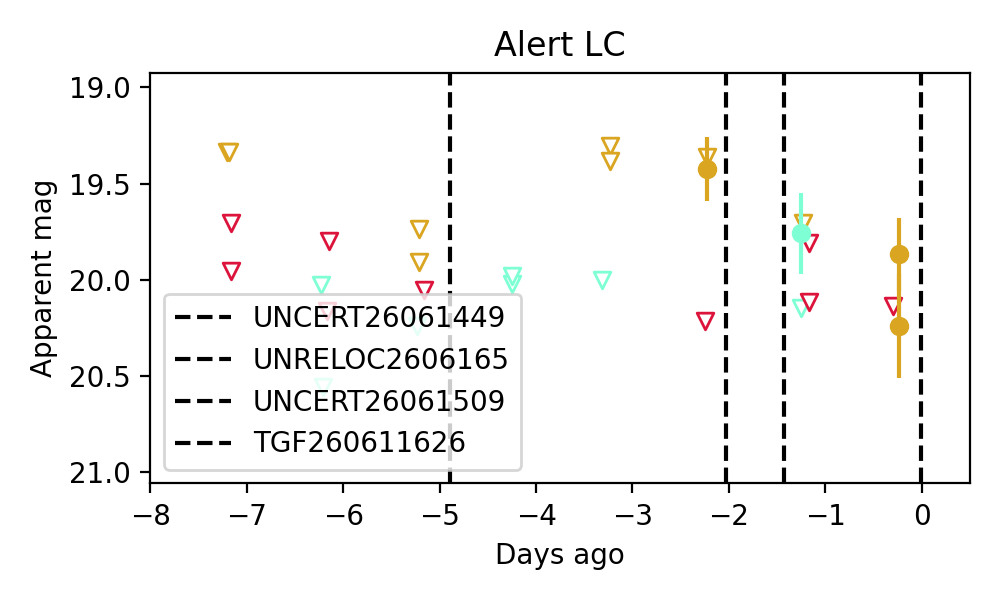
11. ZTF26abbudwr (FBOT?) [Back to Top] [Share] [Trigger Swift] [Fritz ] [Lasair ]RA, Dec: 302.74393, 55.99958 20h10m58.54s, 55d59m58.50sGalactic (l, b): 90.4043, 12.04926 ext(g-r) = 0.416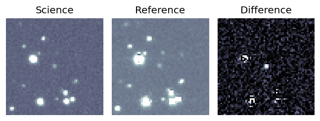
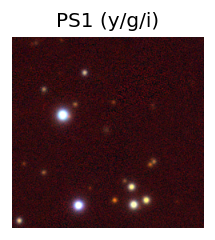
PS1: 1 source in 3 arcsec Closest: d = 0.95 arcsec photoz=0.34+/-0.05 peak abs mag = -22.59 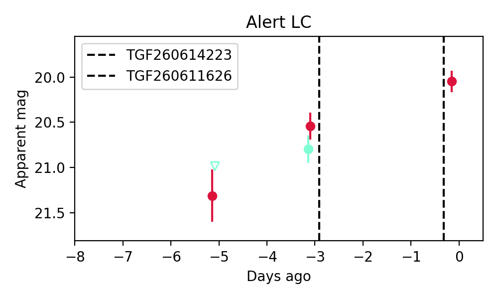
Consistent with synchrotron, g-r>0!
12. ZTF26abbzdgn (FBOT?) [Back to Top] [Share] [Trigger Swift] [Fritz ] [Lasair ]RA, Dec: 249.50621, -20.62818 16h38m1.49s, -20d-37m-41.43sGalactic (l, b): 357.89315, 17.29547 WARNING: 1.46 deg from ecliptic plane ext(g-r) = 0.48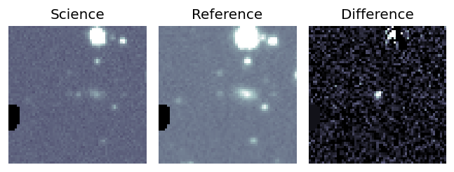
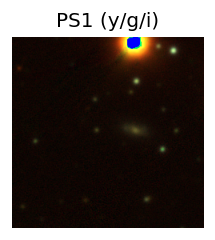
PS1: 1 source in 3 arcsec Closest: d = 3.71 arcsec photoz=0.11+/-0.01 peak abs mag = -20.39 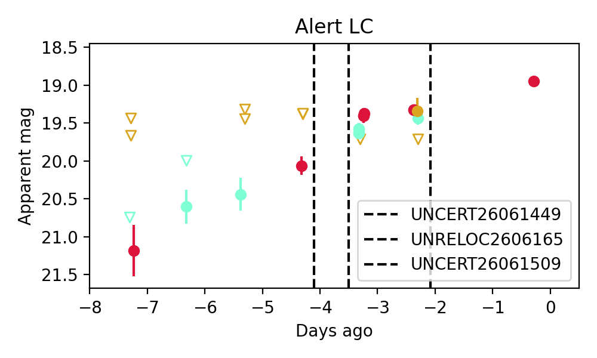
13. ZTF26abbzggr (Afterglow?) [Back to Top] [Share] [Trigger Swift] [Fritz ] [Lasair ]RA, Dec: 268.15843, 64.92043 17h52m38.02s, 64d55m13.56sGalactic (l, b): 94.49238, 30.57922 ext(g-r) = 0.037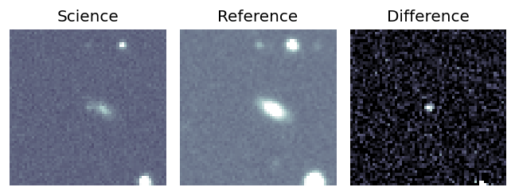
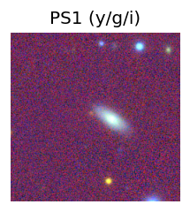
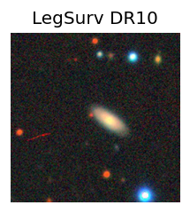
peak abs mag = -18.93 peak abs mag = -18.89 peak abs mag = -18.89 LegacySurvey: 1 sources in 3 arcsec Closest: d = 2.16 arcsec, 315.1 deg (east of north) photoz=0.02 (68% bounds 0.01, 0.04), type=SER peak abs mag = -15.06 (68% bounds -13.86, -16.47) 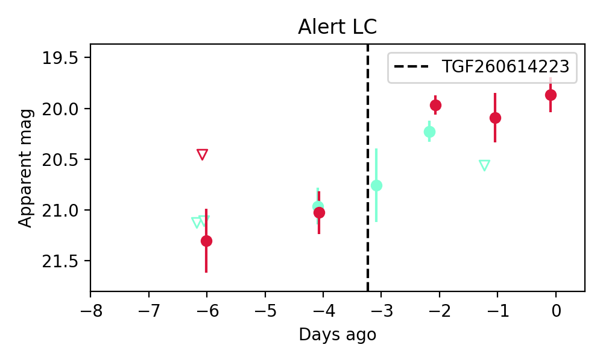
14. ZTF26abccgrj (FBOT?) [Back to Top] [Share] [Trigger Swift] [Fritz ] [Lasair ]RA, Dec: 146.76101, 13.91929 9h47m2.64s, 13d55m9.45sGalactic (l, b): 220.4914, 45.12954 WARNING: 0.52 deg from ecliptic plane ext(g-r) = 0.038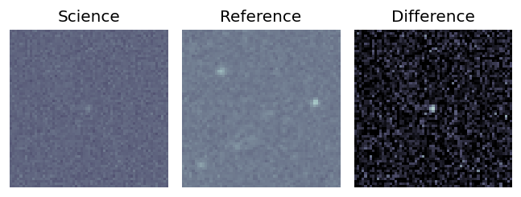
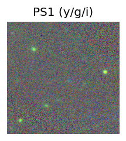
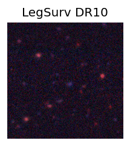
LegacySurvey: 1 sources in 3 arcsec Closest: d = 3.53 arcsec, 230.8 deg (east of north) photoz=0.23 (68% bounds 0.16, 0.35), type=EXP peak abs mag = -20.71 (68% bounds -19.81, -21.77) 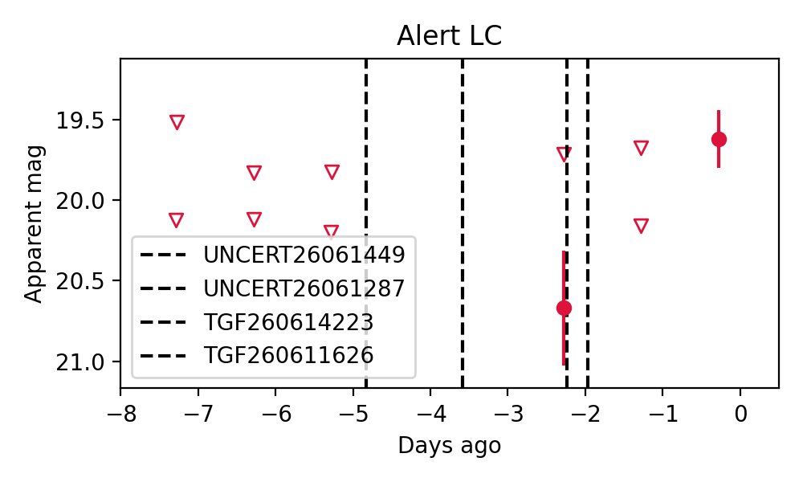
15. ZTF26abccukw (FBOT?) [Back to Top] [Share] [Trigger Swift] [Fritz ] [Lasair ]RA, Dec: 238.02401, -17.78978 15h52m5.76s, -17d-47m-23.20sGalactic (l, b): 352.36599, 27.2702 WARNING: 2.35 deg from ecliptic plane ext(g-r) = 0.167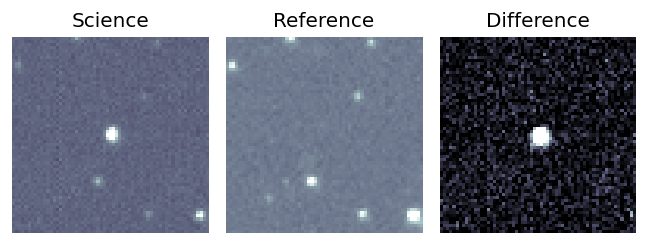
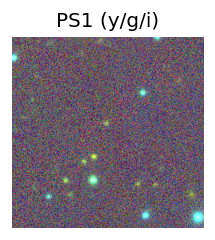
LegacySurvey: 1 sources in 3 arcsec Closest: d = 2.56 arcsec, 16.7 deg (east of north) photoz=0.21 (68% bounds 0.04, 0.61), type=PSF peak abs mag = -23.56 (68% bounds -19.72, -26.25)
16. ZTF26abccyjx (Afterglow?FBOT?) [Back to Top] [Share] [Trigger Swift] [Fritz ] [Lasair ]RA, Dec: 213.42291, 9.15831 14h13m41.50s, 9d 9m29.92sGalactic (l, b): 354.02897, 63.53861 ext(g-r) = 0.027peak abs mag = -25.03 LegacySurvey: 1 sources in 3 arcsec Closest: d = 1.46 arcsec, 90.3 deg (east of north) photoz=0.95 (68% bounds 0.76, 1.17), type=REX peak abs mag = -25.89 (68% bounds -25.32, -26.45)
17. ZTF26abcdcck (Afterglow?FBOT?) [Back to Top] [Share] [Trigger Swift] [Fritz ] [Lasair ]RA, Dec: 204.03446, 23.48475 13h36m8.27s, 23d29m5.08sGalactic (l, b): 15.55694, 79.26594 ext(g-r) = 0.02peak abs mag = -19.94 LegacySurvey: 1 sources in 3 arcsec Closest: d = 2.27 arcsec, 11.8 deg (east of north) photoz=0.03 (68% bounds 0.03, 0.05), type=SER peak abs mag = -17.6 (68% bounds -17.22, -18.56) Consistent with synchrotron, g-r>0!
18. ZTF26abcfhzs (FBOT?) [Back to Top] [Share] [Trigger Swift] [Fritz ] [Lasair ]RA, Dec: 206.08804, 63.15253 13h44m21.13s, 63d 9m9.12sGalactic (l, b): 113.05555, 52.94928 ext(g-r) = 0.018peak abs mag = -19.69 LegacySurvey: 1 sources in 3 arcsec Closest: d = 0.54 arcsec, 72.7 deg (east of north) photoz=0.16 (68% bounds 0.14, 0.17), type=SER peak abs mag = -19.76 (68% bounds -19.54, -19.97)
19. ZTF26abcfltk (FBOT?) [Back to Top] [Share] [Trigger Swift] [Fritz ] [Lasair ]RA, Dec: 263.4156, 4.37686 17h33m39.74s, 4d22m36.68sGalactic (l, b): 27.86131, 19.28074 ext(g-r) = 0.198PS1: 1 source in 3 arcsec Closest: d = 4.73 arcsec photoz=0.21+/-0.14 peak abs mag = -21.38